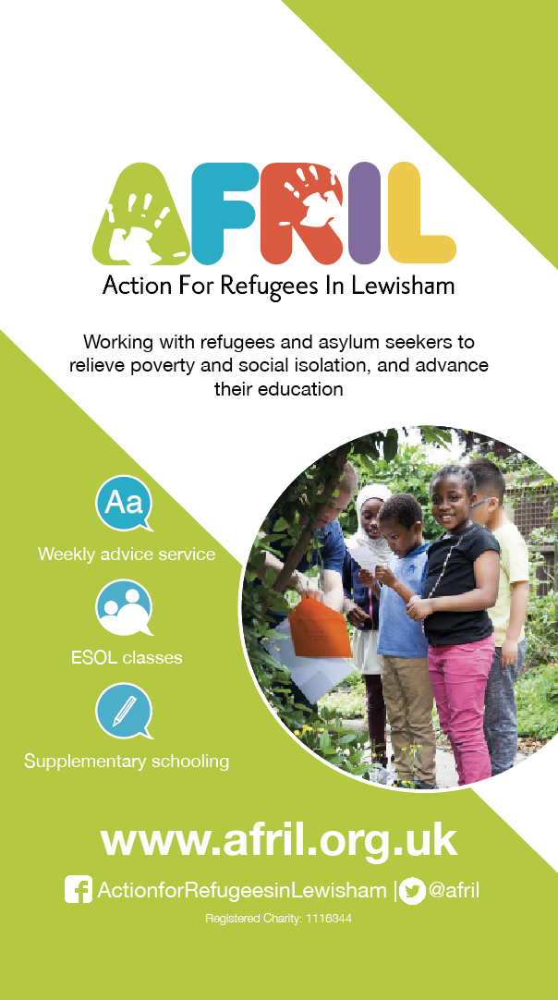
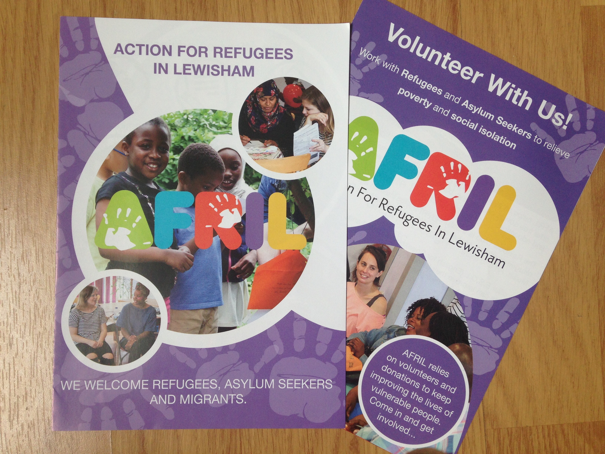
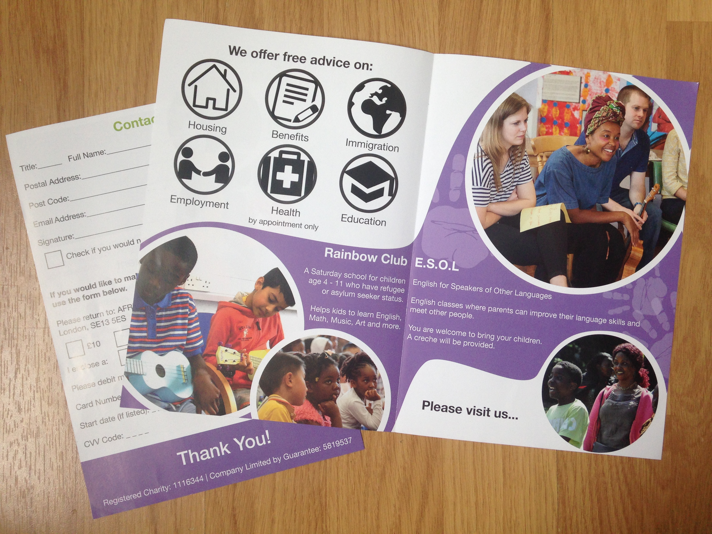

AFRIL
Banner

The banner needed an updated look with AFRIL’s new logo.
For the banner, I wanted a simpler style to their previous one. I did this by adding icons in place of text and added a solid background colour to break up different parts of the text.
I chose the green colour as a colour for growth, life and safety. The photo shows an activity at the Rainbow Club with one girl looking directly at the camera, I liked this picture as it felt inviting to whoever is seeing the banner.
Leaflets

